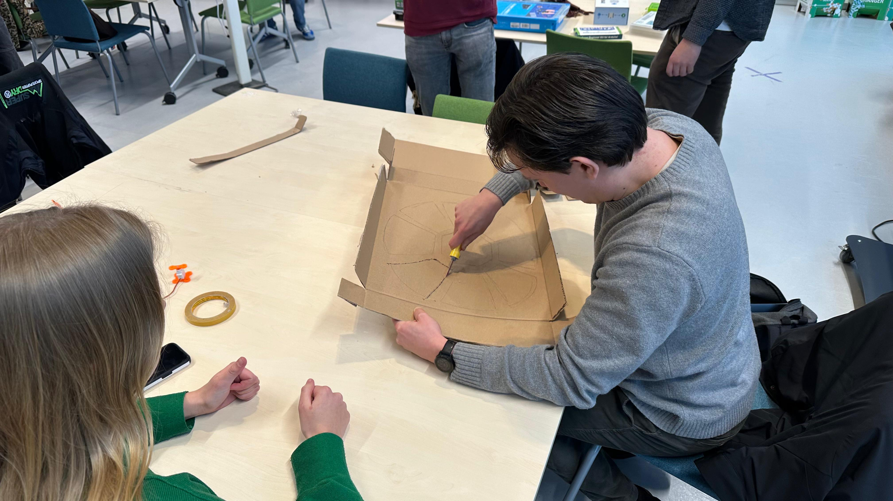
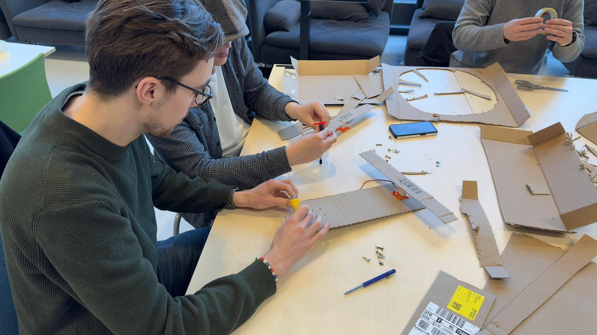
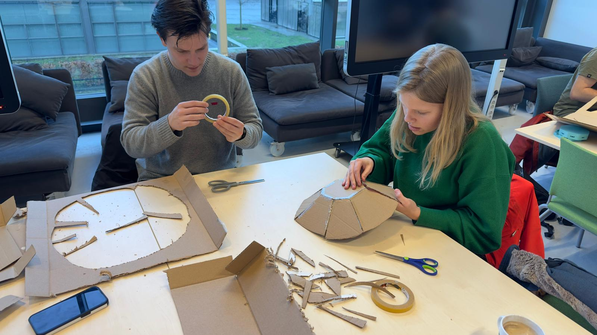
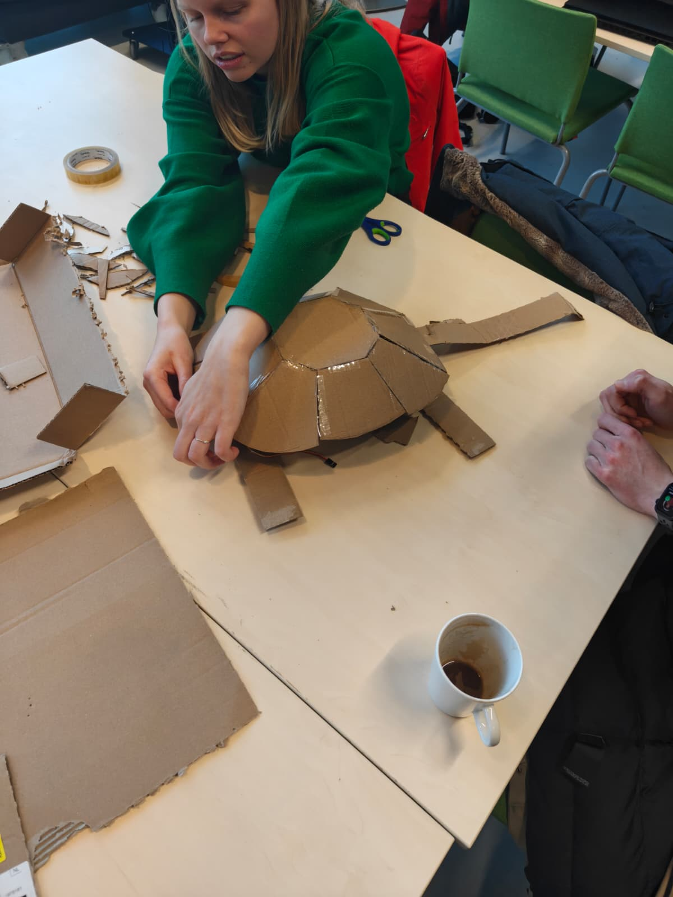
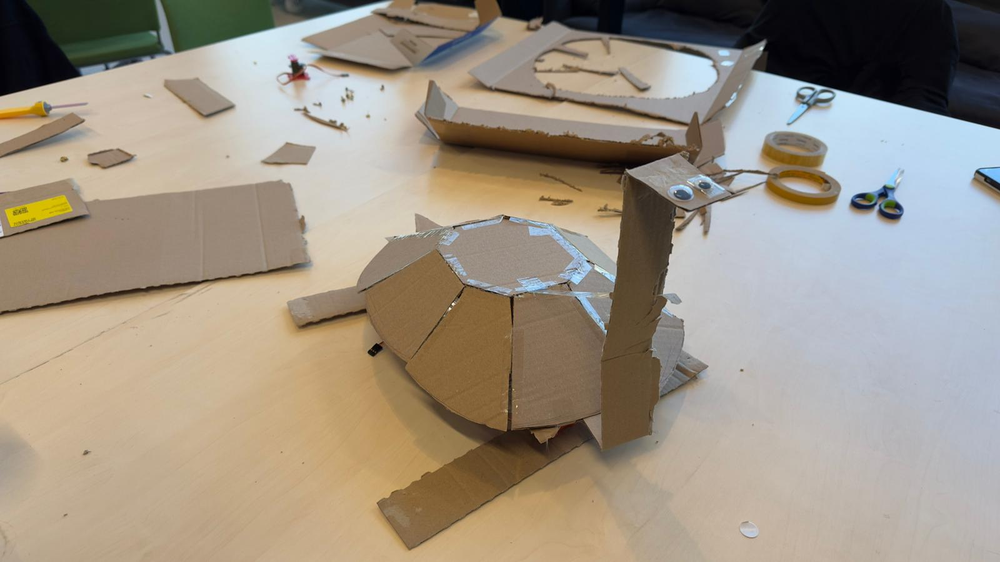
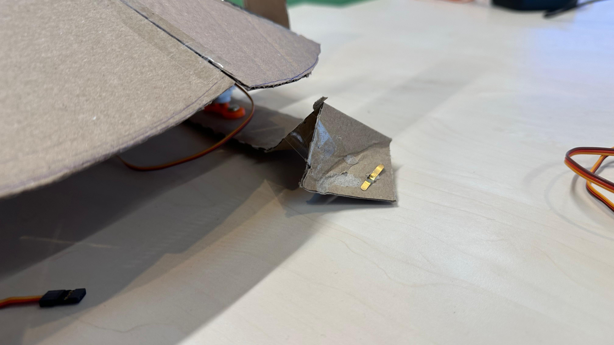
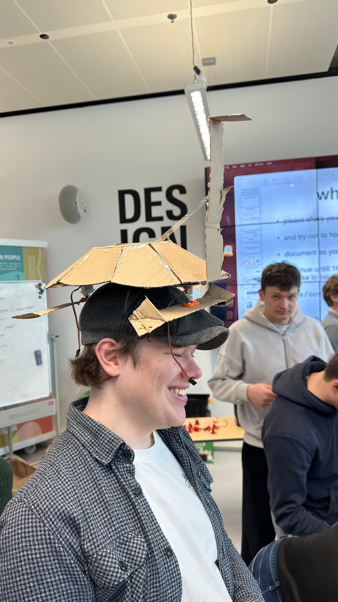

20-02-2026
The lecture of this class discussed how our portfolios could be more scientifically optimized. This considers the structure of how observations are made throughout the different aspects of the given tasks. Throughout these observations, we should focus on the POEMS framework. This framework stands for People, Objects, Environments, Messages, and Services. These concepts offer questions that we can ask ourselves when we are trying to optimize our portfolios.
We also got some tips on how to offer our process by taking three elements into account: Transferability, Validity and Reproducibility. Transferability is the extent to which other people or groups can use the same process to achieve similar results. Validity considers which to procedure was clear and correct, mainly focussing on taking justified steps and documenting thoughts adequately. Finally reproducibility is about how well the process can be repeated by others given the documentation produced. These three elements will guide future work and will be used to optimize the process of my portfolio items.
We started with discussing our building block project to get some feedback. The general consensus about my block is that it was a fun idea but not the most tinkerable. They offered ideas to make it more into a learning kit, using the different electric pieces as tools to understand electricity besides their normal functionality. They furthermore encouraged making the blocks to be more flexible to allow some form of tinkering into existing products to test out how to lay out the electricity. Overall the feedback made me question how to proceed, as I still stand behind the product but not as a tinkering block. Modularity is not neccesairly tinkerability so I will have to find a way to make the blocks more tinkerable or I will have to change the concept to be more of a learning kit.
Following the short lecture we had a workshop where we had to create a creature from cardboard and bring it to life using servos. These servos could be controlled by an audio equalizer in which the different sliders simply controlled the different servos.
We as a group quickly settled on an idea; I had the idea to make a turtle that can walk using a front and back feet servo and the others agreed. Tasks were divided, or well people just took up tasks and we immediately got to work. First someone grabbed all the materials and tools while the others started looking up a design. We only had limited tools so this formed the groups that could work on the cardboard and the group that could work on the servos. We quickly found a design that we liked and two people started carving out pieces for the shell.

The others started figuring out how the servos worked and how to connect them to the audio equalizer. When the servo was working, we connected it to "legs" of the turtle, slowly forming a lower body.

It was overall a very smooth and well communicated process. When the lower part was done the shell was also done and we combined the two to form the full turtle. Of course we added a head with some googly eyes as well.



We could count ourselves lucky as without communicating any sizes or measurements we by accident made everything the correct size. This also means that no actual measurements were taken, which is retroactively something we could have done to make the process more scientific and reproducible. When everything was combined we conducted the first test with the servos and the turtle sadly only waddled in place.
We did some brainstorming and figured it was the lack of grip that blocked movement. So we went back and added some pads to the bottom of the feet to try and increase grip, resulting in prototype 2. This was still not working well.

This was almost the end of class. We tried several other aspects such as raising the feet, adding rubber bands and changing how the feet align but to no avail. We had a good time working on the project but we did not result in a working walking turtle. In the end we decided to change the aim and have the turtle stuck in "air-jail", a concept in which turtles are placed on a little platform and cannot escape due to a lack of any touch points for their feet. This was a fun way to end the project and we had a good laugh about it.
